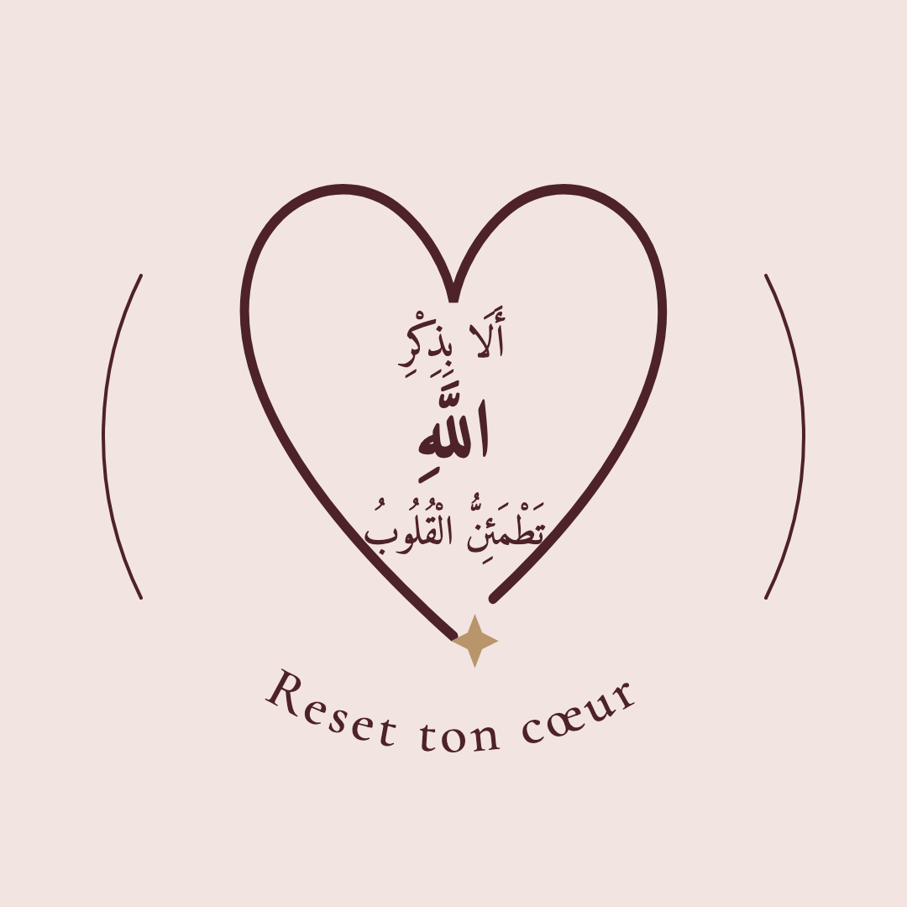
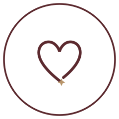

أَلَا بِذِكْرِ اللَّهِ تَطْمَئِنُّ الْقُلُوبُ — « C'est par le rappel d'Allah que les cœurs s'apaisent » (Ar-Ra'd, 13:28). Verset réel, vérifié lettre par lettre, composé en Amiri dans le cœur en chemin. Le nom d'Allah au centre, l'étoile dorée sur l'ouverture.

Le calligramme est l'emblème maître — covers, site, stories, documents. Pour les petites tailles (avatar 48px, favicon) où le verset serait illisible, le cœur en chemin seul prend le relais — même trait, même étoile.

brand/sceau-full.svgversion complète avec couronne — site, covers, documentssceau-simple.svg · sceau-simple-ivoire.svgpetites tailles, fonds clairs / sombresavatar-instagram-1024.pngà uploader sur @psy.coeurlogiesceau-full-960.pngsceau HD fond transparent — Canva, stories, PDFapple-touch-180.png · favicon-32.pngicônes siterender-*.htmlsources pour régénérer les PNG